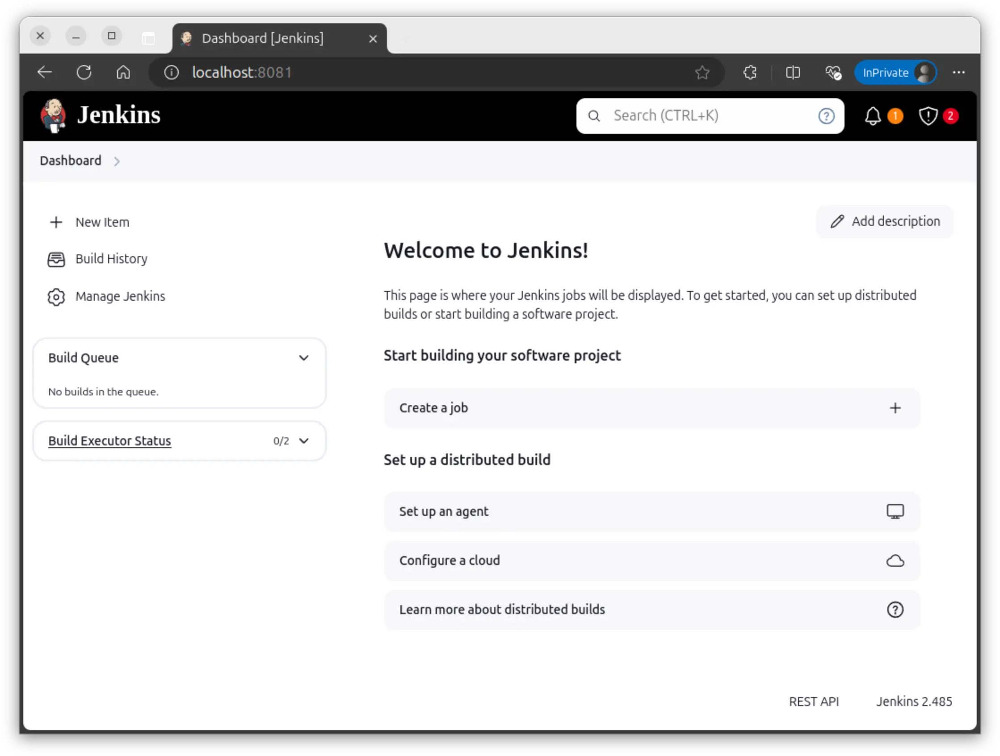
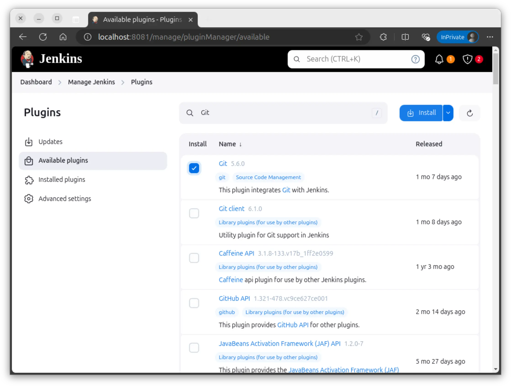

CI/CD 平台：Jenkins¶
基本概念¶
Quote
- 持续集成（Continuous Integration, CI）：
- 尽快将代码更改集成到主干分支，在提交与合并时自动运行构建和测试。
- 能够在开发过程中更快更简单地发现和解决问题。
- 持续交付（Continuous Delivery, CD）：持续交付是一种软件工程方法，旨在改进软件的发布流程，使得软件的发布可以更加频繁、更加可靠。
- 代码经过 CI 的测试和构建后，CD 负责将代码及其依赖打包为可随时部署的软件包，并可能在生产环境中测试和部署。
CI/CD 强调自动化，使用流水线，大幅节省人力资源，极大提高效率。
Jenkins 是一个开源的自动化服务器，用于自动化各种任务，包括构建、测试和部署软件。Jenkins 支持各种插件，可以扩展其功能。
Debian 的质量管理（Quality Assurance, QA）团队使用 Jenkins 在 jenkins.debian.net 上进行持续集成，相关配置文件见 qa/jenkins.debian.net。
目前我们正在积极推进使用 CI/CD 平台构建无盘系统，这将使得系统管理更加清晰、稳定。
Jenkins 入门¶
Jenkins 官方的入门教程不适合我们
Jenkins 的入门教程 Creating your first Pipeline - Jenkins 事实上很不友好，一开始就使用复杂的 Multibranch Pipeline 任务。多分支构建离我们太遥远，而且 Branch Source 插件很难配。我们应当从最简单最原始的 Freestyle 任务开始。
Docker 安装¶
使用下面的 Docker compose 文件启动 Jenkins。该 compose 文件跳过了 Jenkins 的初始化向导，直接启动 Jenkins 服务。
services:
jenkins:
image: jenkins/jenkins
environment:
- JAVA_OPTS="-Djenkins.install.runSetupWizard=false"
ports:
- "8080:8080"
然后访问 http://localhost:8080。

Jenkins 的功能依靠各种插件支持。点击左侧 Manage Jenkins - Plugins - Available plugins，搜索并安装 Git 插件，这样 Jenkins 就能够从 Git 仓库拉取代码。

Tip
如果你的网络环境不好，可以在 Plugins - Advanced Settings 中将 Update Site 改为 http://mirrors.tuna.tsinghua.edu.cn/jenkins/updates/update-center.json。
Freestyle 任务¶
接下来我们要让 Jenkins 从 Git 仓库拉取代码并执行构建。
首先，在 GitHub 或 GitLab 等地方创建一个公开仓库（为了方便稍后拉取仓库时不用配置 SSH 密钥）。在仓库里添加一个简单的脚本，比如：
回到 Jenkins 首页，点击 Create a job，创建一个 Freestyle project。这是 Jenkins 中最简单的任务类型，已经能够满足我们的需求。
创建成功后来到任务的 Configure 界面。在这里我们配置任务的各种属性，比如源码管理、构建触发器、构建步骤等。
- 拉取源码：在 Source Code Management 中选择 Git，填写仓库地址。
- 触发器：在 Triggers 中可以配置定时构建、向 SCM 轮询等。你可以按照页面上的提示配置，这里就不做演示。
-
构建步骤：在 Build Steps 中添加构建步骤，选择类型为 Execute shell，填写构建脚本的内容，比如
sh build.sh。
-
保存：点击 Save 保存任务配置。
点击左侧的 Build Now 立即执行构建，Jenkins 就会先拉取代码，然后执行构建步骤。
Jenkins 会为每次构建生成一个构建号，你可以点击构建号查看构建的详情，在其中的 Console Output 中查看构建的输出，在 Changes 中查看本次构建的变更（一般由 Git 提交记录生成）。
GitLab 触发构建¶
接下来我们希望当 GitLab 仓库有新的提交时，Jenkins 能自动构建。这就需要使用 GitLab Plugin 插件。它在 Triggers 中新增了 GitLab Webhook，你会看见多出了这样的选项：
Build when a change is pushed to GitLab. GitLab webhook URL: https://jenkins.clusters.zjusct.io/project/chroot-debian-sid
- Push Evnets
- Merge Request Events
- ...
将 Webhook URL 复制到 GitLab 仓库的集成 - Jenkins 设置中，按 GitLab 的提示配置用户名密码等即可。此后，如果你向 GitLab 仓库推送代码，GitLab 就会向 Jenkins 发送 Webhook 请求，触发 Jenkins 构建。
推送构建结果到 GitLab¶
请阅读 GitLab Plugin 文档。这里给出大致的步骤：
- 在 GitLab 中创建 Access Token。可以是 Personal Access Token，也可以是 Project Access Token。该 Token 需要为项目的 Maintainer，并至少具有
api权限。 - 在 Jenkins 中添加 GitLab API Token 凭据。
- 在 Jenkins System 中设置 GitLab Connection，填写 GitLab 服务器地址，选择对应的 GitLab API Token 凭据。
- 在 Jenkins 任务的 General 中选择一个 GitLab Connection，在 Post-build Actions 中选择发布到 GitLab。
- 执行构建，查看构建结果是否成功发布到 GitLab。
Jenkins 流水线¶
Quote
- Pipeline Syntax：流水线整体语法定义，不涉及具体的 step 怎么写。
- Pipeline Steps Reference：可以查到 Jenkins 内置和所有插件提供的 step 的语法。
本节讲解 Jenkins 声明式（Declarative）流水线的语法。
pipeline {
stages {
stage() {
steps {
/* 以 sh step 为例，其文档见 https://www.jenkins.io/doc/pipeline/steps/workflow-durable-task-step/#sh-shell-script */
sh(
script: "echo Hello, Jenkins!",
returnStdout: true
)
}
}
}
}
简单来说：
- pipeline 里面是一个个 block。
- block 可以是 sections、directives
- 常用的 sections：
- stages：里面可以放一堆 stage
- steps：里面可以放一堆具体的 step
- post：
- 常用的 directives：
- stage：里面必须有且仅有一个 steps、stages、parallel 或 matrix，和一个可选的 agent
- parallel：里面放一堆 stage，它们并行执行
- when：放在 stage 里，里面放一堆 conditions，定义该 stage 的执行条件
- options：放在 pipeline 或 stage 例，配置一写选项如超时、重试等
- triggers：放在 pipeline 里，配置触发器如定时构建（cron）、拉取 Git 仓库等
- stage：里面必须有且仅有一个 steps、stages、parallel 或 matrix，和一个可选的 agent
- step：由各类插件提供，执行具体的流水线步骤，见 Pipeline Steps Reference
- 常用的 sections：
- 上面的示例就是：一个 pipeline，里面有一个 stage，stage 里有一个 steps，steps 里有一个 sh step。
Jenkins 配置与维护¶
- [Initial Settings - Jenkins](https://www.jenkins.io/doc/book/installing/initial-settings/)
通过上面的练习，你已经掌握了 Jenkins 的基本操作。现在我们进一步学习 Jenkins 的配置管理，将 Jenkins 配置保存为代码，从而实现配置的版本控制和自动化。
构建镜像以添加插件¶
阅读 jenkinsci/docker: Docker official jenkins repo，了解如何设置 Update center 和安装自己的插件。你也可以阅读一个实际的例子 emnify/jenkins-casc-docker。
Jenkins CasC¶
Jenkins CasC 插件允许用户将 Jenkins 配置保存为 YAML 文件。这样可以更好地管理 Jenkins 配置，也方便备份和恢复。它能管理 Jenkins 自身和插件的配置。
阅读 emnify/jenkins-casc-docker，这个项目十分简洁地展示了如何使用 Jenkins CasC 插件。
实际部署时可以进一步进行精简，删去如 material-theme 等已经无法在新版 Jenkins 使用的插件。此外项目中没有介绍本地账户的配置，这很简单：
Jenkins Job Builder¶
我们已经将 Jenkins 配置保存为代码，接下来我们将 Jenkins 任务也保存为代码。Jenkins Job Builder 是一个用于管理 Jenkins 任务的工具，它使用 YAML 文件来描述 Jenkins 任务。
下面的例子展示了前文 Jenkins 入门中我们创建的简单项目。你可以借助 Job Definitions — Jenkins Job Builder documentation 文档尝试理解下面的配置：
- job:
name: "test"
scm:
- git:
url: "your-git-repo-url"
branches:
- origin/main
triggers:
- gitlab
builders:
- shell: "sh build.sh"
了解了任务的配置后，就可以阅读 Configuration File — Jenkins Job Builder documentation 了解怎么配置运行 Jenkins Job Builder。我们需要写一个配置文件，告诉 Jenkins Job Builder 需要配置任务的 Jenkins 服务器地址、用户名密码等信息。然后就可以使用 jenkins-jobs 命令将任务配置应用到 Jenkins 服务器上。
匿名访问与安全¶
Quote
使用 Matrix Authorization Strategy 插件，可以更细粒度地控制用户权限。下载插件后，在安全设置中可以添加匿名用户并设置其权限。为了让匿名用户能够查看基本的任务构建状态，需要赋予 Overall、Job 和 View 的 Read 权限。
需要注意的是应当关闭 Job/Workspace 的匿名访问权限，否则匿名用户可以查看工作区的文件。其中很可能包含敏感信息。